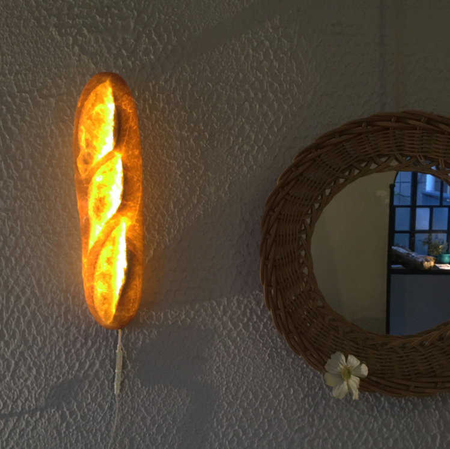

Lampara-Barra de pan
Yukiko Morita es una artista japonesa que vive apasionada por el pan. Su pasión es tal, que la llevó a crear una colección en el que combinaba su comida favorita con su otra gran pasión, el diseño de iluminación. Lo que empezó como un proyecto artístico-personal, se ha convertido poco a poco en un modelo de negocio. Desde 2014 dirige una tienda online desde donde vende sus lamparas de pan, tanto de pared como de mesa. Y por si todavía dudas de nuestra palabra, si, sus lamparas son realmente de pan, simplemente se encuentran conservadas en resina.
Lampara-Barra de pan
Lampara-mix
Lampara-Croissant
Lampara-Pan rustico
Para mas informacion:
lamp@lamp.com